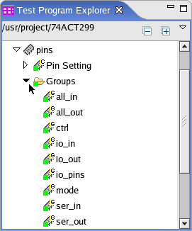

Opening the setup editor
Before you begin
Make sure that the setup perspective is opened.
The setup perspective includes Test Program Explorer where you can open the setup editors of Pin Configuration tool.
Procedures
Opening setup editors
To open one of the following setup editors,
- the Pin Setting Editor
- the Core Allocation Editor
- the DPS Channel Mode Editor
- the Utility Purpose Editor
in the Test Program Explorer view, double-click the setup component.
Opening other editors
- To open the Group Editor, Ports Editor, and Alias Sets Editor, if the group, port or alias
set has been defined,
- click the triangle to expand all the items.

- double-click the group, port or alias set to open the setup editor.
- click the triangle to expand all the items.
- To open the Group Editor, Ports Editor, and Alias Sets Editor, if no group, port or alias
set is defined,
- create a new group, port or alias set.
- double-click the newly created group, port or alias set in the Test Program Explorer view.
Results
The editor is opened.
What to do next
Edit the pin configuration data in the setup editor.
Functional changes
- Introduced before SmarTest 6.3.2